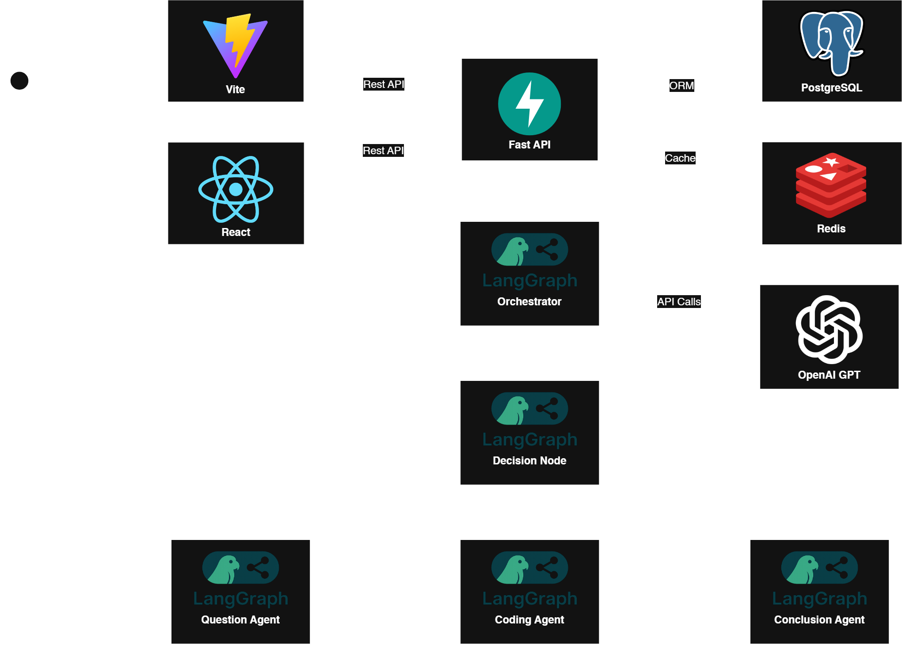
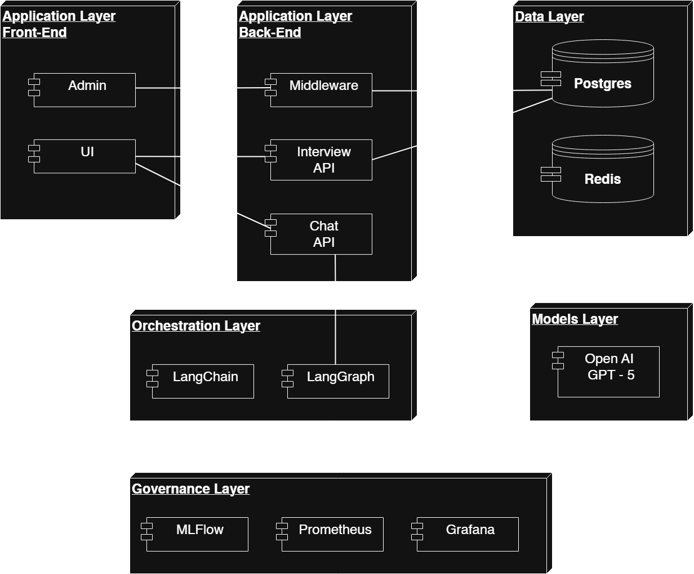
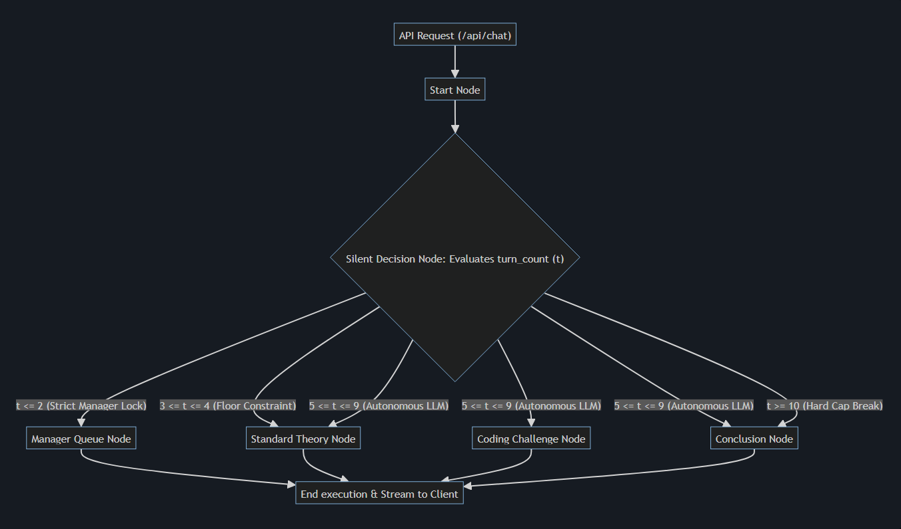
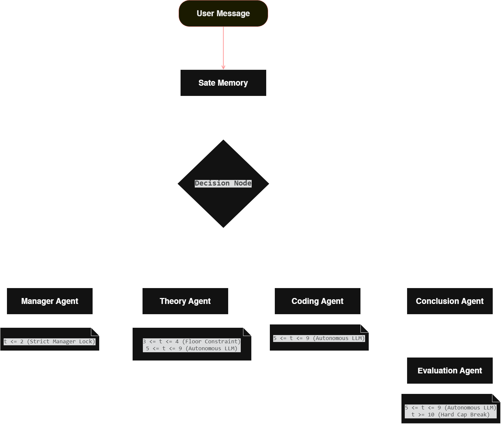
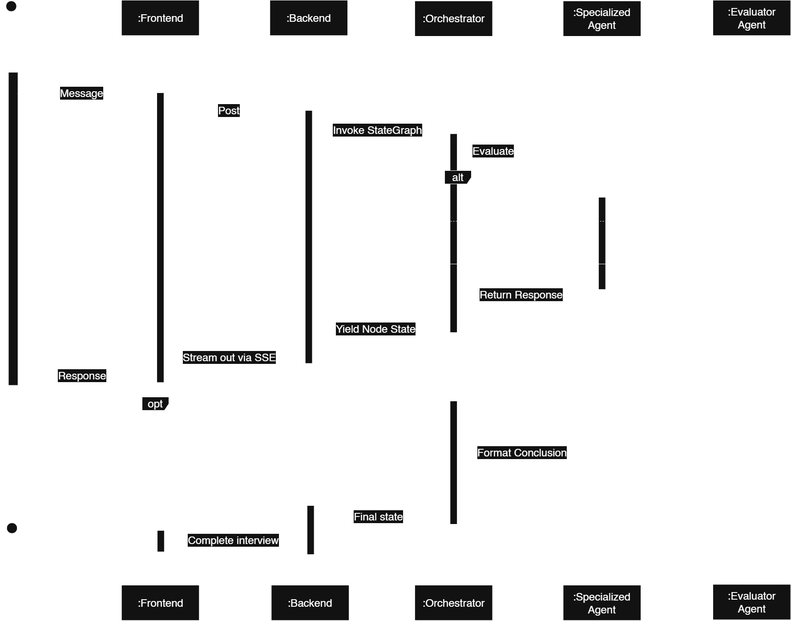

Agentic AI HR Interviewer
A full-stack, AI-powered interview simulator designed to help users prepare for technical and non-technical job interviews. This application conducts a dynamic, one-on-one conversation and then generates detailed feedback on the candidate's performance.
Video Demonstration
The Architecture: Autonomous Recruiting Intelligence
An advanced, multi-node AI interviewer that simulates human-level technical screenings using deep reasoning and dynamic follow-ups.
Intelligent Serving Layer
Features a Vite + React frontend for low-latency candidate interaction and a FastAPI backend for secure, real-time orchestration.
Durable State & Caching
Utilizes PostgreSQL for persistent session history and Redis for ultra-fast transient state coordination.
Agentic Orchestration with LangGraph
A LangGraph Brain Node coordinates specialized Question, Coding, and Conclusion agents to dynamically route conversation flows.
Generative Intelligence Model
Powered by OpenAI's GPT-4o to understand nuances, provide real-time coding hints, and maintain an empathetic tone.
MLOps Monitoring & Governance
Employs Prometheus and Grafana for system telemetry alongside MLflow for model metrics and ethical tracking.
The Engineering
Architectural Pattern: Layered Architecture (N-tier)
The system follows the Layered Architecture (N-tier) pattern, ensuring a clean separation of concerns across different modules of the application:
- Presentation Layer: The Vite + React frontend handles candidate interactions, displaying real-time streaming responses and interview interfaces.
- API Layer: The FastAPI backend manages HTTP/SSE connections, strict payload validation, and interacts directly with the orchestration engine.
- Orchestration Layer: The LangGraph multi-agent engine processes interview states, routes conversational paths, and formulates prompts for the Foundation Model (OpenAI GPT-4o).
- Data Layer: PostgreSQL, Redis, and MLflow serve as the foundation for state management, rapid caching, token analytics, and model governance.
This layered design maps to the following operational workflow stages:
- Initialize: The user interface sets up candidate profiles and establishes session state in the database.
- Route: The LangGraph Decision Node intelligently processes turn counts and conversation history to dictate the next agentic action.
- Generate: Specialized sub-agents (GPT-4o) generate targeted questions (coding, theory, or manager) based on strict prompt constraints.
- Store: Real-time transcripts, telemetry, and exact token usage are asynchronously persisted in PostgreSQL and cached in Redis for low-latency retrieval.
- Serve: The FastAPI backend streams text back to the React UI via Server-Sent Events (SSE) for a fluid, natural conversational experience.
- Govern: All AI invocations, tokens, and logic durations are tracked via MLflow and Prometheus/Grafana for enterprise-grade observability and lineage.
Functional Requirements
- Dynamic Interviewing: Conduct one-on-one technical and behavioral interviews using specialized AI agents.
- Code Verification: Evaluate and provide hints on candidate code in real-time.
- Feedback Generation: Automatically generate detailed feedback reports on candidate performance.
- State Tracking: Maintain context and history across a 60-minute interview session.
Non-Functional Requirements
- Performance: speed and responsiveness via Redis caching and Vite frontend.
- Security: protection against unauthorized access enforced by strict FastAPI endpoint validation.
- Usability: ease of use provided by a responsive React interface with real-time SSE streaming.
- Reliability: system stability and availability maintained by a robust orchestration engine.
- Scalability: ability to handle growth via stateless APIs and PostgreSQL.
- Maintainability: ease of updates and fixes using LangGraph modular agents and MLflow tracking.
- Portability: ability to run in different environments due to modular N-tier architecture.
Architecture Diagram

Component Diagram

Node Diagram


Sequence Diagram
